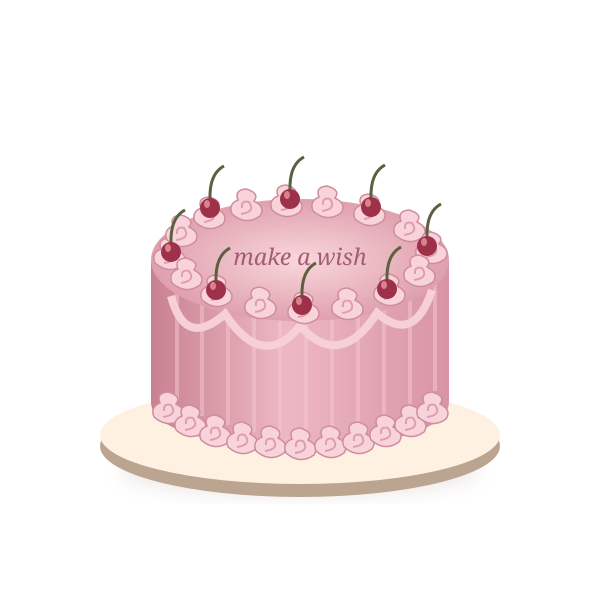

Colour, personality, and a little birthday magic.
Wedding & gourmet cakes · Varca, GoaSome moments
Some moments
deserve something
beautiful.
Wedding cakes and gourmet cakes for all occasions, from Nisha D’Costa in Varca, Goa. Find a little inspiration for your next celebration.
Find your inspiration >* Inspired by @cakes.by.nisha · Varca, Goa
THE CELEBRATION EDIT / 01
a lot of joy.Concept illustration

a little sweetness,a lot of joy.Concept illustration
Your celebration starts here
What’s the occasion?
Wedding cakes. Gourmet cakes. Your occasion.
Illustrated inspiration, with the real portfolio on Instagram.
A soft, romantic direction for your next chapter.
Small milestones deserve a sweet moment, too.
Meet the name behind the cakesNisha D’Costa.
Nisha D’Costa.
A little sweetness from Goa.
Nisha’s public Instagram introduces her work as “Wedding cakes and gourmet cakes for all occasions.” Based in Varca, Goa, her profile is the place to explore her cake portfolio and get in touch.
Explore the real cake portfolio >Profile details verified from @cakes.by.nisha. Artwork on this demo is illustrative.
It’s all in the little detailsYour idea.
Your idea.
Your occasion.
Your kind of lovely.
Start with the moment
Think about the occasion, the date, and how many people you’re celebrating with.
Gather a little inspiration
A favourite colour, a mood, a meaningful detail. Save the things that make it feel like you.
Ask about the possibilities
Confirm availability, flavours, pricing, collection, and dietary requirements directly with the baker before booking.
Let’s dream up something sweetTell us about
Tell us about
your moment.
Put your ideas into a handy enquiry draft. Copy it to share with Nisha via her verified Instagram account, or call the number listed in her bio.
View Nisha’s Instagram Call +91 98904 72796
This demo keeps your details in your browser. It does not submit an enquiry.Based in Varca, Goa. Contact details are from her public Instagram bio.